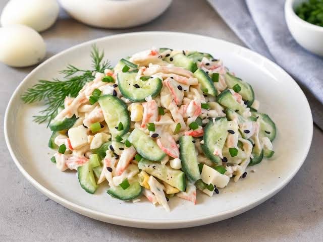

There's nothing fancy about this creamy cucumber salad, and that's exactly why I love it. It's just crisp cucumbers, a little red onion, and a creamy homemade dressing made with sour cream, lemon juice, dill, and a touch of sugar to balance the tang. I always let it sit for just a few minutes so the dill can soften and the dressing tastes more rounded, but not so long that the cucumbers lose their crunch. I'll make a batch to go with dinner and end up eating half of it straight from the bowl before it even hits the table!
This was so good! Thank you for the recipe suggestion. :)
I have had way better cucumber salad than this. My granny would hate this even more than I do!